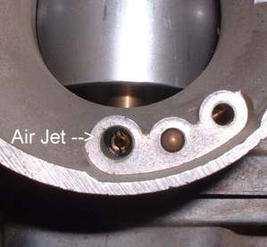
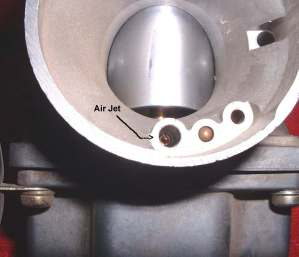
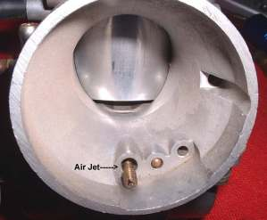
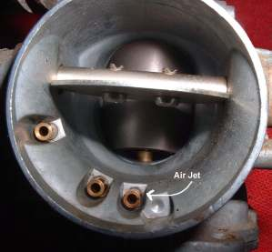
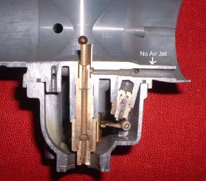
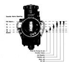
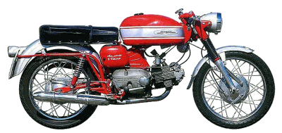
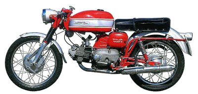

¶ Air Jets control the air that goes into the Needle Jet's air bleed. Air Jets come in three flavors.
- Screw-in Air Jet.
- Pressed-in Air Jet.
- No Air Jet.
Air Jets control roughly the same range as the Main Jet. Sort of fine tunes the Main Jet. I doubt that you will be changing it much but you might.
 Screw-In Air Jet 1 |
 Screw-In Air Jet 2 |
 Pressed-in Air Jet |
 No Air Jet |

 |
 |
Copyright © 1999-2015 dansmc.com. All rights reserved.